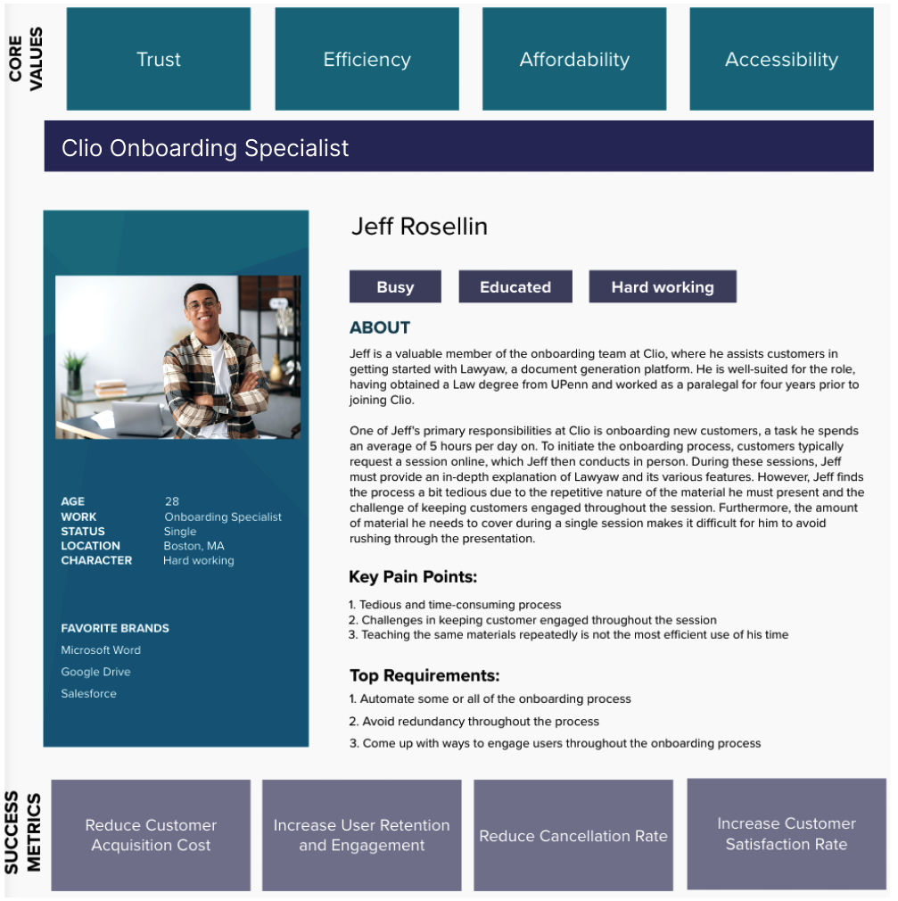
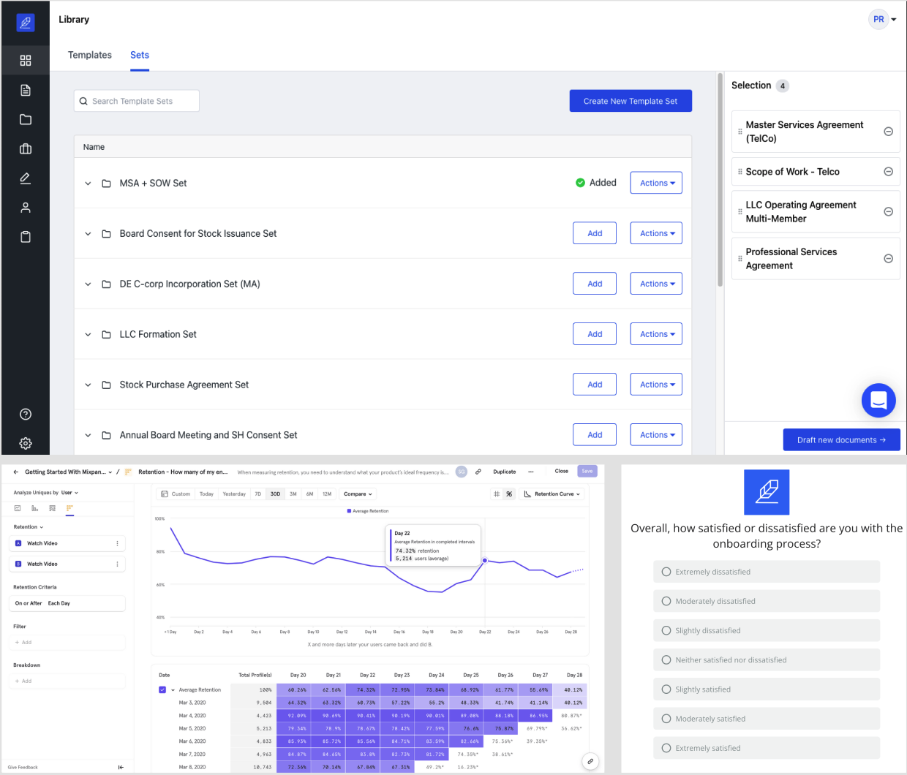

Self-serve Onboarding Project
Project Overview
Clio offers a comprehensive suite of cloud-based solutions designed to improve the productivity and efficiency of law firms and legal professionals. Lawyaw is the legal document automation software within Clio suite that helps attorneys save time by automating their document creation and management processes.Upon joining the Lawyaw team at Clio, I discovered their slow, error-prone, and inefficient in-person onboarding process which incurred a high customer acquisition costof over $200 per customer. Furthermore, customers felt overwhelmed and rushed during these in-person sessions, struggled to understand product features, and often sought help from customer support, leading to some churning their subscription.
As a Product Manager, I lead the development and launch an intuitive self-serve onboarding process for Lawyaw product.
- 01. We reduced customer acquisition cost by 70%. A vast majority of our customers were able to initiate the use of our product without requiring in-person assistance.
- 02. We reduced the churn rate by 10%.
- 03. Out of the customers who completed our onboarding process, 62% reported being satisfied or very satisfied with the self-serve onboarding process.
My Process and Role
I took a systematic approach to delivering value to customers and achieving business goals through the creation and management of products. In this project, my main responsibilities included:
- 01. Conducting remote interviews with 11 customers who went through Lawyaw's onboarding process in the past two months
- 02. Partnered with the onboarding team to identify pain points and obstacles associated with the in-person onboarding process
- 03. Defining and prioritizing product requirements in collaboration with engineering and design teams
- 04. Defining milestones and deadlines to meet customer needs in collaboration with engineering and design teams
- 05. Worked with sales and marketing teams to plan and execute feature launches
- 06. Defined and tracked key performance indicators (KPIs) to measure the success of the launched features
Duration
4 months
Teams Involved
Engineering, Design, Onboarding, Marketing, Sales
Team Size
15 people
...
Customer Research
To begin the project, I held several meetings with our onboarding team as well as our leadership to gain a deeper understanding of our current onboarding process and challenges our team was facing, as well as to learn more about our customers and their backgrounds. I then reviewed feedback and comments from customers about their existing in-person onboarding experiences. Subsequently, I conducted 11 remote interviews with customers who underwent Lawyaw's onboarding process in the previous two months. The goal was to identify any pain points or challenges that emerged during the in-person onboarding process for different customer segments.
Customer Segmentation
Based on our initial meetings, customer interviews, and their interaction logs, we have categorized our customers into three primary segments.Understanding the current onboarding process and Clio's team challenges
After talking to our onboarding team, I was able to better visualize the process and understand our customers' journey today. Below, I visualized the overal picture of our customers' journey today.
- 01. Time-consuming process: The team has raised concerns about in-person onboarding being too time-consuming, which can impact their productivity.
- 02. High cost: Leadership has expressed concerns about the cost of in-person onboarding being too expensive.
- 03. Low customer engagement: The team has raised concerns about keeping attorneys engaged for the full 45 minutes during the onboarding process, which can impact their understanding and retention of critical information.
Understanding the customers pain points duirng in-person onboarding
I conducted remote interviews with recent customers to understand challenges with our existing onboarding process. I then used an affinity diagram to extract relevant data and present findings to stakeholders.

My main findings:
Our onboarding process is lengthy and customers feel rushed and overwhelmed.
“Honestly, the session [onboarding session] was long and I kept losing focus during the session. On top of that, I felt ashamed to ask questions because I didn't want to seem like I was not paying attention, but this was making me even more frustrated and overwhelmed.” -- P8

Our training materials are scattered and inconsistent, making it difficult for users to locate and access them efficiently.
“It was frustrating to have to navigate through different links and search for materials across multiple platforms, with videos, articles, and resources scattered all over the place.” -- P11

Customers prefer going through onboarding process at their own pace.
“I would prefer to go through the onboarding process at my own pace rather than sitting through a long meeting and following what the onboarding team tells me. This way, I can ensure that I fully understand everything and can ask questions as they come up, rather than feeling overwhelmed and potentially missing important information.” -- P6

...
User Persona
To gain a deeper understanding of our target audience's goals, behaviors, motivations, pain points, and preferences, I created multiple user personas. These personas helped the team to design a feature that meet users' needs, expectations, and desires. User personas also help me to communicate with stakeholders by providing a shared understanding of the users we are designing for.- 
...
Defining and prioritizing product requirements
By gathering input from stakeholders and customers, analyzing impact and implementation time, and prioritizing based on these factors, I had multiple meetings with our cross-functional team to identify the most important features and prioritize them.
| Guideline | Impact | Effort | Priority |
|---|---|---|---|
| To enhance clarity and accessibility, consolidate all training materials into a centralized repository and arrange them in a comprehensible manner. | Very high | Medium | P0 |
| Design a self-serve onboarding experience and eliminate unnecessary in-person procedures from the process. | Very high | Hard | P0 |
| Develop in-app tactics to remind customers of their upcoming free trial expiration date and provide them with the option to upgrade their subscription. | Very High | Medium | P0 |
| Create in-app strategies (e.g., onboarding tooltips) to guide customers through different product components and features. | Very high | Hard | P0 |
| Create methods for displaying customers' progress, achievements, and next steps throughout the onboarding process. | High | Hard | P1 |
| Allow users to complete the onboarding process at their own pace, with the option to skip or revisit steps if needed to avoid feeling rushed or overwhelmed. | High | Medium | P1 |
| Develop strategies for obtaining customer feedback after they finish the onboarding process. | Medium | Easy | P2 |
...
Technical requirements
- 01. We should collect a variety of metrics such as sign-up/sign-in data, session details, time spent on pages, clickstream logs, bounce rates, user demographics, conversion and cancellation rates, among others.
- 02. Each email address can only be used once to create an account.
- 03. Our system should maintain a record of users' trial status, such as the number of days remaining until their account expires.
- 04. It is necessary to enable the Single Sign-On (SSO) sign-up process.
- 05. After the expiration of the customers' free trial period, when they log in again, they should be automatically redirected to the upgrade form.
...
User journey and product design
After identifying the user's needs and prioritizing them, I spent time sketching out the user journey and mapping their experience using a tool called Balsamiq. Then, I communicated the findings and user journey to our design team to ensure that the product we created met our user's expectations and aligned with their needs. I then collaborated with a designer on our team to finalize the product's design.
...
Timelines and deadlines
Once we had the initial design, I had multiple meetings with the engineering team to break down different components and features into smaller, manageable tasks and estimating the time it would take to complete each task. I then prioritized these tasks based on their importance and dependencies, ensuring that the most critical tasks are completed first. I worked really closely with our engineering team to ensure that the timelines are feasible and achievable, and to identify and mitigate any potential risks or roadblocks that could delay the project.
...
Dogfooding
To ensure that our final product meets the highest quality standards and satisfies the needs of our target audience, I facilitated a dogfooding session where every team member was asked to test the new onboarding process for three days. Moreover, to encourage thorough testing and bug reporting, I introduced a prize for the team member who identified the maximum number of unique bugs and issues.
This strategy served two crucial purposes: 1) enabling team members to gain hands-on experience with the new feature and 2)providing valuable feedback and insights into potential issues or bugs, which allowed for proactive resolution before launch.
...
Soft Launch
To ensure that our new onboarding process was effective and ready for a wider release, we conducted a trial with 10 new customers, gathering feedback and testing the product. After the onboarding process, I interviewed each of these customers for 15 minutes to collect their feedback on the experience. Additionally, I checked to ensure that the data we collected during the trial was properly stored in our databases. This allowed us to evaluate the success of the new process and make any necessary adjustments before rolling it out to a larger audience.
Our main learning from the soft launch:
- 01. Decrease free trial period to increase sense of urgency: By decreasing the duration of our free trial period, we can instill a sense of urgency in potential customers and motivate them to take action sooner, resulting in a higher conversion rate and ultimately boosting our revenue.
- 02. Provide in-person consultation on demand: A couple of customers expressed concerns about eliminating in-person training altogether. Offering a 30-minute consultation service (if needed) to customers concerned about eliminating in-person training can address their roadblocks and increase satisfaction, while also boosting our conversion rate.
- 03. Enable flexible trial period: Initially, we had a fixed free trial period of 14 days, but some customers requested an extension due to time constraints preventing them from reviewing all materials in that timeframe. To address this feedback, we provided the sales team with the option to extend the trial session for engaged customers who show a high potential for conversion. By offering this flexibility, we can accommodate the needs of our customers and improve our chances of converting them into paying customers.
...
Tracking product success
On June 7, 2021, we launched our new onboarding process. To gauge the effectiveness of this new feature, we implemented a variety of strategies and utilized different methods to track its success:
- 01. Mixpanel data visualizations: I used the Mixpanel tool to visualize various metrics over time, including cancellation rate, bounce rate, the quantity of users who requested 1-1 training, and other relevant data points.
- 02. Fullstory sessions: I used the FullStory tool to analyze user interactions and identify pain points by observing their behaviors while going through the onboarding process.
- 03. Survey: Users were prompted to complete a satisfaction survey to gauge their satisfaction level with their onboarding experience.
- 
...
Achievements and Key Takeaways
- 01. We exceeded our initial objective of reducing the cost of onboarding new customers by 40%, achieving an outstanding 70% decrease. A vast majority of our customers were able to initiate the use of our product without requiring in-person assistance.
- 02. Our original goal was to reduce the churn rate by 30%, however, we fell short of this target, achieving only a 10% decrease in the churn rate.
- 03. Out of the customers who completed our onboarding process, 62% reported being satisfied or very satisfied with the self-serve onboarding process.
- 04. Effective communication is crucial in cross-functional projects. Product managers must prioritize clear collaboration between teams to ensure everyone understands the goals and their roles.
- 05. Flexibility is key in cross-functional projects. Product managers should be adaptable, open to feedback, and willing to pivot the project to align with goals while navigating challenges.